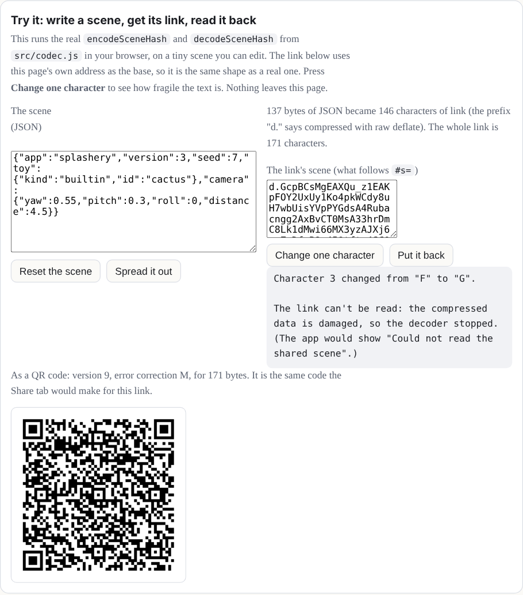

Share links and QR codes
A Splashery link does not point at your scene. It is your scene. Open the Share tab, copy the link, and the whole toy (its options, the look, the camera, any paint) is written into the web address itself. This chapter takes one apart, lets you make one, and shows how the same link fits in a QR code.
What is in a link
The link has four parts, from left to right:
https://ryanjosephkamp.github.io/splashery/#s=d.eJxVjkEOgzAM…
- The page. The ordinary address of the app. The browser asks the server for this part and nothing more.
-
#s=, the start of the fragment. A browser never sends the fragment (everything after the#) to a server, so the scene is not in any request. The page reads it with script after it loads (parseHashinsrc/codec.js). -
A format letter and a dot:
d.means the rest is compressed, andj.means it is not (the next paragraph says when). -
The scene. The scene as JSON text (its shape is in
docs/SCENE-SCHEMA.md), turned into bytes as UTF-8, compressed with raw deflate (the same method as a zip file, without the zip's wrapper), and written with the 64 letters, digits,-and_that are safe in an address (base64url).
The j. form exists for a browser that cannot compress (no
CompressionStream): it is the same JSON, written in base64url but not
compressed. It is not readable as text, only safely spelled. Any browser reads either form
if it can decompress, and every current browser can.
It is not a hash of anything, and not a lookup. Some sites make a short link by saving your data on a server and handing you a key. Splashery cannot do that, because it has no server (the previous chapter). Nothing is stored anywhere. The link is the only copy of the scene, which is why you can send it in a message and the other person sees exactly your toy, and why a scene you did not copy the link of is not recoverable from the site.

Why one changed character usually breaks it
Compressed text is not like ordinary text. In a sentence, a wrong letter is one wrong
letter. In a deflate stream each bit tells the decoder how to read the bits after it (which
code table, how far back to copy from), so one changed character changes how everything
after it is read. The decoder then either stops with an error (decodeSceneHash
throws, and the app shows "Could not read the shared scene"), or produces text that is no
longer valid JSON, which stops at JSON.parse. Rarely, the changed character
lands on a spare bit at the very end or turns one letter inside a word of the JSON into
another, and the link still works with a slightly different scene. That is the "usually". Do
not edit a link by hand to change a setting. Change the setting in the app and copy the new
link.
When a link does decode, the app does not trust it. The JSON goes through
normalizeScene (src/state.js), which drops keys it does not know,
clamps every number to its allowed range, and fills in anything missing with its default.
The demo shows the result of that step below the decoded text.
Old links keep loading
A link made last month must open next year. The scene has a version number, and
normalizeScene reads old ones. Version 3 is the current schema. A
version 2 link is a version 3 scene without the pattern, the motion, and the options
on shelf toys; it loads, and those take their defaults. A version 1 file (the old planet
painter) is refused with a message that says so, and so is a scene from a newer Splashery
than the one you are running. Saving always writes the current version. The rule is written
in CLAUDE.md and is tested.
The same applies to the embed player and the <splashery-toy> element,
which read the same links (src/viewer.js, src/element.js).
How long a link can be
A toy at its defaults is a link of about 700 characters. Paint and clay are the things that
grow, because every dab or stroke is written into the scene. Sharing stops at 12,288
characters of scene (LINK_LIMIT in src/exports.js). Past that,
buildShareHash first leaves out the paint, then the clay, says so, and if the
link is still too long it tells you to save the scene as a JSON file instead. A link carries
settings, not your files: a photo or splat file from your device has to be opened
again by whoever opens the link.
A scene as a QR code
A QR code is a picture of bytes, and the link is just text, so any link can be one. With
labs on, the Share tab has a QR code button (src/qr/share.js). It builds
the same link as the Copy button and draws it as a QR code you can scan with a phone camera
and save as a picture. The code holds only the link. Nothing is uploaded, and your
own files stay on your device exactly as they do for a link.
There is a ceiling. A QR code at its largest (version 40, the lowest error correction) holds
2,953 bytes, and the whole link counts, address and all. A code carries extra codewords (a
codeword is 8 squares) from which a scanner can rebuild the data when some of it cannot be
read, and the more of them it carries the fewer bytes it holds. Level M can rebuild about 15
percent of the codewords and level L about 7 percent. That is a rate for codewords, not a
promise about any 15 percent of the squares: damage that covers the three big squares that
locate the code, or lands on many blocks of codewords at once, can defeat a code that lost
less, while many damaged squares inside one codeword cost only that codeword.
shareCode (src/qr/share-code.js) picks level M while the
code stays at version 30 or smaller, and level L beyond that, for the smallest code a
phone can still resolve. In the measurements of the QR lane, every toy at its defaults came
to about 690 to 715 characters. A link of up to 711 characters fits version 21 at level M,
and one of 712 to 779 needs version 22, so most toys are version 21 and a few, depending on
the scene's random seed, are version 22. A toy with 20 dabs of paint was about 1,170
characters (version 28), 60 dabs was about 2,000 (version 33, level L), and 150 dabs was
3,671, too long for any code, so the dialog says so and offers Save JSON. Nothing is split
across several codes.
The dialog shows the code at once, and under it says "Checking that it scans…" while it
reads the code back (with the browser's own barcode reader, or
vendor/jsqr where that cannot read QR codes). It changes that line to "It
scans" only if the text it read back is exactly the link; otherwise it says the code did not
read back and suggests Save JSON. That is one reader on one drawing on this device, not a
promise about every phone camera. The demo above does the same sizing with the real
shareCode: it shows the version and level of its own link, and draws it.
Where it lives: src/codec.js (encode, decode, parseHash),
src/state.js (normalizeScene),
src/exports.js (buildShareHash, shareURL,
LINK_LIMIT), src/qr/share.js and
src/qr/share-code.js (the QR code), docs/SCENE-SCHEMA.md, and the
tests tests/qr4-2.spec.mjs and tests/man5.spec.mjs.